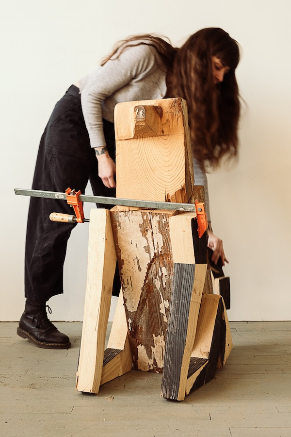

Rebekka Federle:Artist Talk
Please join us for an artist talk with Rebekka Federle on Saturday, February 7 at 4 PM at the gallery. Tea and snacks will be served. We hope you’ll join us!
This conversation offers a chance to hear directly from the artist about her practice, themes, and the work currently on view. Guests are encouraged to engage and ask questions, creating an open dialogue around Rebekka’s process and ideas.
This event is free and open to the public.
About the Artist:
Rebekka Federle is a sculptor working primarily with wood and paper to explore the limits of empathy, domination, and the inconstancy of truth and language. Her work seeks to position the viewer in a state of benevolence from which they can decide whether or not to extend care. She is particularly interested in slapstick, peasant craft, and dogs.
She earned her MFA from the University of Chicago, and holds a BFA in Woodworking and Furniture Design from the Maine College of Art. Her work has recently been shown at The Lawn (Chicago, IL), Cochran Woods Art Center (Chicago, IL), The Logan Center (Chicago, IL), and she has upcoming shows at Heaven Gallery (Chicago, IL) and Stove Works (Chattanooga, TN). She is currently a Teaching Fellow in the Department of Visual Arts at the University of Chicago.